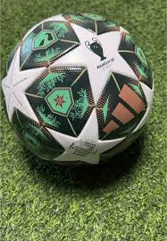
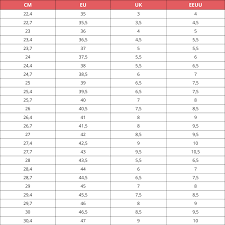

OBJETOS EN VENTA
Camisetas
HERMOSA CAMISETA DEL BARCELONA ANTIGUA

price :345.000
tallas: xs,s,m,l,xl,xxl
Balones
HERMOSO BALON DE LA CHAMPIONS LEAGUE

Precio :200.000
tamaño :INFANTIL, GRANDE
Guayos
HERMOSOS GUAYOS DE LIONEL MESSI
price :450.000
tallas:

ESPECIFICACIONES
CAMISETAS:
Tipo de inventario: pedido completo Temporadas adecuadas: verano, invierno, primavera, otoño Género aplicable: neutral/Tanto para hombres como para mujeres Grupo de edad aplicable: adultos ¿Se trata de comercio exterior? Sin patrón: estampado Nombre de la tela: fibra de poliéster Composición del tejido: fibra de poliéster (poliéster) Contenido de la composición del tejido : 100 Nombre del forro: fibra de poliéster Composición del forro: fibra de poliéster (poliéster) Contenido de la composición del forro : 100 Escenarios aplicables: correr, fútbol, baloncesto y voleibol
BALON
El nuevo balón de la Champions League 2024-25 es un espectáculo visual. Sus vibrantes colores y diseño innovador prometen una experiencia de juego única. Con tecnología de última generación, este esférico garantiza un vuelo preciso y un toque excepcional. El balón oficial de la UEFA Champions League 2024-25 presenta un diseño vanguardista que combina elementos clásicos del torneo con detalles modernos. Su superficie texturizada proporciona un agarre óptimo en cualquier condición climática, mientras que su núcleo de alta densidad asegura un rebote consistente y predecible. La cámara de aire de butilo garantiza una retención de aire superior, manteniendo el balón en perfectas condiciones durante todo el partido. Siente la emoción de la Champions League con cada toque de este balón excepcional. Su diseño inspirador y su rendimiento inigualable te transportarán al corazón de la competición. Este balón no es solo un objeto deportivo, es un símbolo de pasión y excelencia.